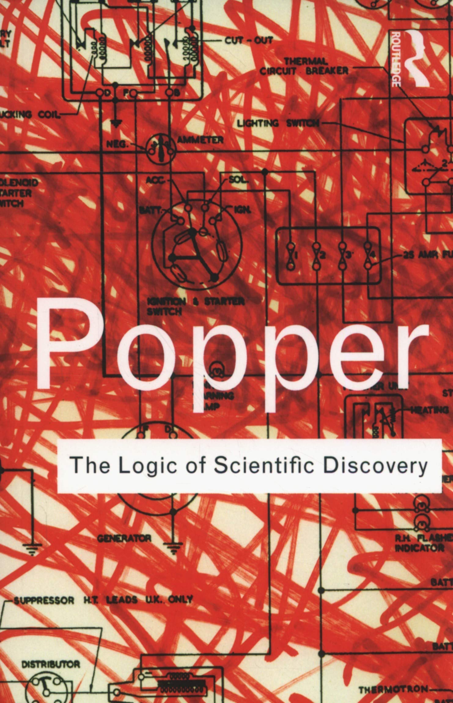
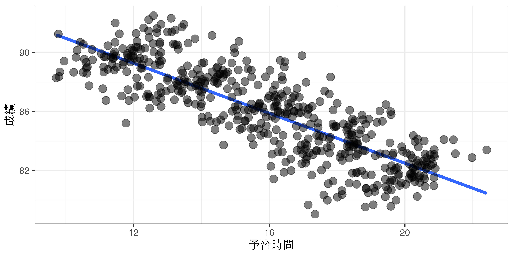

flowchart TD
仮説 --> 多変量
仮説 --> 単変量
単変量 --- ex1("投票率（X）は49%だ
(X = 49%)")
多変量 --> 連関なし
連関なし --- ex2("性別と投票率には
関係がない
(X⊥Y)")
多変量 --> 連関あり
連関あり --> 方向性あり
連関あり --> 方向性なし
方向性なし --- ex3("年齢（X）と投票率（Y）には
関係がある
(Y ∝ X)")
方向性あり --> 正の方向
正の方向 --- ex4("年収（X）が高いほど
投票する傾向（Y）が高くなる
(X↑ → Y↑)")
方向性あり --> 負の方向
負の方向 --- ex5("疎外感（X）が強いほど
投票する傾向（Y）が低くなる
(X↑ → Y↓)")
方向性あり --> 名目
名目 --- ex6("カトリックの投票率（X）は
プロテスタントの投票率（Y）より高い
(X > Y)")
マクロ政治データ分析実習
第2・3回 リサーチデザイン
宋 財泫
関西大学総合情報学部
2023/9/28 & 2023/10/05
本日の内容
- 研究テーマの種類
- 優れた研究テーマの基準
- 論文の構成
- 理論と仮説
- 分析単位の問題
研究テーマ
研究テーマの種類
- 実証的問題
- 本講義で扱う内容
- 規範的問題
- 実証的アプローチによる解決は不可能であるものの、実証的問題へ変換させることによって実証可能に
- 分析的問題
実証的問題
何が真実で、何が真実でないか
- 観察や経験から実証
- 世論調査や統計調査だけでなく、インタビュー記録、議事録、史料などを使うことも可能
- \(\Rightarrow\) 実証 \(\neq\) 統計分析
- 「良い/悪い」、「善/悪」、「〜すべき」のような価値判断は介入 \(\times\)
- 事実 (or データ) に語らせる
実証的問題の例
- 民主主義国家間においては、戦争は行われないか
- 2023年9月28日時点での内閣支持率は何%か
- ある国に対する経済的制裁は当該国の態度変化をもたらすか
- 少人数クラスは学習効果を向上させるか
規範的問題
何が望ましく、何が望ましくないか
- 主に「∼すべき/あるべき」の結論
- 研究者は価値判断が介入 (= 主観的)
- \(\Rightarrow\) 客観性が必要な科学的アプローチは不向き
規範的問題の例
- ヘイトスピーチは規制すべきか
- 表現の自由を重視するか、マイノリティーの人権を重視するか
- トランプは悪い大統領だったのか
- 「悪い」の基準は人それぞれであり、基準によって評価が変わってくる
- 宋さんは超爽やかイケメンである
- (事実の可能性が高いが) 美の基準は人それぞれ
「科学的なもの」とは何か
反証可能性 (falsifiability) が存在すること
- Popper, Karl. 1959. The Logic of Scientific Discovery. Routledge
- 「反証可能性」以外にも科学的なものの条件として「演繹」も
- 仮説が実験や観察によって反証される可能性があること
- 同じ手順で行われた実験、観察（= データ収集）から既存の結果に反する結果が得られる可能性が存在する
- 反証されない場合、既存の理論は補強される
- 反証された場合、既存の理論は棄却されるか、信憑性が低下する
- 陰謀論は反証可能性がない

鈴木 (2008) から
鈴木光太郎. 2008.『オオカミ少女はいなかった:心理学の神話をめぐる冒険』新曜社
教科書には正しいことだけが書かれていなければならないとは思っていない。むしろ、誤った記述があっても許されると思う(誤りは直せばよい)。科学は誤ることがあたりまえであって、そもそも科学とは、そうした誤りをたえず書き改めてゆく営みだからだ。私が許されないと思うのは、だれかが誤って書いたものをなにも考えずに受け売りしたり、それを孫引きやひ孫引きしたり、果ては先祖がたどれない引き方をしている場合である。あるいは、誤りであることが判明しても、直しもしない場合である。
「科学的なもの」とは何か（続き）
- 全てのカラスは黒である \(\leftarrow\) 反証可能性 \(\bigcirc\)
- 黒いカラスが発見されると、理論が強化される
- 虹色のカラスが発見されると、理論が否定される
- 太陽が東から昇るのは宋さんの意志である \(\leftarrow\) 反証可能性 \(\times\)
- 翌日も東から昇ると、理論が強化される
- 翌日は西から昇ると、それも宋さんの意志だから理論に反しない
- 3·11 大震災はアメリカのよる人工地震である \(\leftarrow\) 反証可能性 \(\times\)
- 証拠が見つからなかったら \(\rightarrow\) アメリカの巨大資本による隠蔽だ！
- 理論が否定されない
- 証拠が見つからなかったら \(\rightarrow\) ほら! 見てみ!
- 証拠が見つからなかったら \(\rightarrow\) アメリカの巨大資本による隠蔽だ！
規範的問題から実証的問題へ（1）
参照枠組み (frame of reference) の変更
- 規範: ヘイトスピーチは規制すべきか
- 実証: ヘイトスピーチ規制に対する賛成世論は何%か
- 規範: トランプは悪い大統領だったのか
- 実証: トランプは悪い大統領だったと思う市民が過半数か
- 規範: 宋さんは超爽やかイケメンか
- 実証: 宋さんを超爽やかイケメンと評価する専門家はいるか
規範的問題から実証的問題へ（2）
背後にある前提条件を実証する
- 価値判断によって問いの立て方が変わってくるものの、実証可能に
- 銃器事故による死亡者は何人いるか
- 銃器の善悪を死亡者数で判断
- 銃器市場がもたらす経済効果は何ドルくらいか
- 銃器の善悪を経済効果で判断
- トランプ政権の間、失業率のどれほど下がったか
- 政権の善悪を経済で判断
- ヘイトスピーチを規制している国ほど報道自由度 (Press Freedom Index) が高いか
- ヘイトスピーチの善悪を表現の自由で判断
- 表現の自由の尺度として報道自由度ランキングを使用
- 銃器事故による死亡者は何人いるか
分析的問題
現実世界よりも抽象度の高い命題の妥当性を検討
- 数学の証明問題と類似
- \(\Rightarrow\) フォーマル理論 (formal theory)
- 演繹的アプローチ
- 前提が正しく、計算のミスがない限り、結果は常に「真」
分析的問題の例
- コンドルセのパラドックス
- 個々人の選好が推移的であるにも関わらず、集団としては選好順位の循環が起こること
- アローの不可能性定理
- 選択肢が3つ以上存在するとき、公正な選挙制度の4条件である (1) 非独裁性、(2) 定義域の非限定性、(3) 無関係な選択肢からの独立、(4) パレート効率性、全てを満たす選挙制度は存在しないこと
良い研究テーマとは何か
良い研究テーマの条件
Monroe (2000) の「良い研究テーマ」の条件
- Monroe, Alan. 2000. Essential of Political Research. Westview Press
- 明快さ (clarity)
- 検証可能性 (testability)
- 理論的重要性 (theoretical significance)
- 実用性 (practical relevance)
- 独創性 (originality)
- 1と2は研究のための不可欠な条件
明快さ
問いは具体的である同時に、一般化可能性を目指す必要がある
- 日本では、なぜ投票率が下降傾向にあるのか?
- 有権者の意識の問題?選挙制度の問題?経済的な問題?
- \(\rightarrow\) どの面に注目すれば良いのか分からない
- \(\rightarrow\) 研究の方向性を具体的に示す必要がある
- 例
- 修正前: どうすれば開発途上国の貧困問題は解決できるか
- 修正後: 海外からの投資は開発途上国の貧困率を下げるか
- 問いが具体的 \(\rightarrow\) 特定の国/地域/時代などが限定されやすい
- 一般化可能性が高いほど理論的重要性、実用性も高まる
- 具体性と一般化可能性のトレードオフ関係
- 適切な (\(\leftarrow\) 無責任な言い方) バランスが必要
検証可能性
問いは経験的分析によって答えることが出来なければならない
- 検証不可能な問いは研究テーマとして成立しない
- 研究テーマが「実証的問題」であること
- 規範的問題は実証的問題へ変換する
- データが入手可能であること
- 高費用 (お金、時間、労力)のため入手出来ないデータ
- 倫理的問題のため入手できないデータ
- その他の理由
- 織田信長のインタービュー (守護霊に聞けば問題なし! )
- 金正恩の政治意識など
- 学部生などにとっては「二次データ」や「集計データ」がおすすめ
- 参考) 佐藤博樹・池田謙一・石田浩. 2000『社会調査の公開データ―2次分析への招待』東京大学出版会
理論的重要性
当該テーマに対する理解や知識を高めること
- 既存の理論を再確認、支持、強化させる方向
- 新しいデータ (異なる国、時代、測定法)、方法を用いることで既存の理論を支持・補強
- 既存の結果と異なる結果が示された場合、理論の修正、新しいリサーチクエスチョンへ繋ぐことが可能
- 既存の理論を批判すること
- 既存の先行研究の全体、または一部に疑念を持ち、独自のリサーチデザインで研究をやり直す
- 既存の理論の修正や新しい知見だけが科学的に有意味なものではない
- 「知の蓄積」が重要
実用性
研究の成果が社会に貢献できること
- 社会だけでなく、個人・企業の利益への貢献なども含まれる
- 自然科学の場合、応用学問は言うまでもないが、数学など純粋学問も結果的には社会に貢献できることが多い
- 素数の特徴を活用した暗号化 (RSA)
- 量子力学と量子コンピューター
- 社会科学の場合、社会問題から生まれた問いは社会貢献しやすい
- 選管の啓発活動は本当に投票率を上げるのか
- 少人数クラスは子どもの教育効果を向上させるか
- 保育所整備率が上がれば女性（母親）の就労率が上がるか
独創性
あまりにも常識的な結果が予想される問いは避ける
- 研究内容が全く新しい必要はない
- 先行研究が存在しない研究は (1) 実は先行研究があるか、(2) 研究としてあまり意味がないから誰も研究していないケースが多い
- むろん、天才的なひらめきで全く新しい問いが生まれる可能性もある
- 当たり前の結果を見て誰が喜ぶだろうか/何がハッピーだろうか
- 例1: 政党帰属意識 (Campbell et al., 1969) は有権者の投票選択に影響を与えるか
- 共和党に帰属意識を持つ有権者は共和党へ投票する傾向 ⇒ 当たり前
- 例2: 政党帰属意識が投票選択に与える影響が昔に比べ低下したのはなぜか
- 「明快さ」を欠けるが、出発点としては意味のある問い
パズルから探す
一般的な常識からかけ離れた事実から出発
- 学術研究の場合、一般常識は「既存の理論/先行研究」になることが多い
- 例1: 民主主義は貧困層に対する福祉を充実させる (Boone 1996; Bueno de Mesquita et al. 2003; Dasgupta 1993; Moon and Dixon 1985; Przeworski et al. 2000; Sen 1981 など)
- 本当にそうなのか?
- Ross, Michael. 2006. “Is Democracy Good for the Poor?” American Journal of Political Science. 50(4): 860–874
- 例2: 比例代表制は死票が少ないため、投票率が高い
- 逆に候補者/政党が多すぎて認知コストが高いのではないか?
パズルから探す
一般的な常識からかけ離れた事実から出発
- 世界的な傾向、全国/全体の傾向からかけ離れた事実など
- 例1: 世界的に見て投票率は国政>地方選挙であるにもかかわらず、なぜ日本は地方選挙の投票率が高いか
- Yusaku, Horiuchi. 2005. Institutions, Incentives and Electoral Participation in Japan: Cross-Level and Cross-National Perspectives. Routledge.
- 例2: 国政選挙において大都市の投票率は低いにもかかわらず、18歳の投票率のみ高いのはなぜか
- 東京都: 全体11位 \(\leftrightarrow\) 18歳1位
- 島根県: 全体3位 \(\leftrightarrow\) 18歳37位
パズルから探す
一般的な常識からかけ離れた事実から出発
- 既存の理論を支持/再確認/強化する場合はやや異なるかも
- それでも、既存の理論を再検証することは「既存の研究成果が間違っている可能性がある/修正の必要がある」ことを前提としている
- 再現研究であっても既存の研究/理論を鵜呑みにしていることではない
- たとえば、デュヴェルジェの法則
例
- 昔は通用したかも知れないが、今はどうだろう
- アメリカでもそうかも知れないが、日本ではどうだろう
- Aという方法/尺度ではそうかも知れないが、Bという方法/尺度を採用すればどうだろう
論文の構成
論文の全体的な流れ
政治学を含む社会科学における論文の構成
- イントロダクション
- 先行研究のレビュー
- 理論の提示
- 仮説の提示
- 対抗仮説の提示
- 作業化 (操作化) の提示
- 証拠の提示
- 結論
- 理論と仮説については講義後半にて改めて解説
イントロダクション
落語における「つかみ」に該当
- リサーチクエスチョンの提示
- 「なぜ、この問いが大事か/興味深いか」を示す \(\Rightarrow\) 問題の背景
- 読者に興味を持たせるために、分かりやすく説明する
- 例1: 既存の理論で、この現象は説明できない
- 例2: 世界的に見られる傾向から逸脱している
- 例3: これまでとは異なる新しいパターンである
- 例4: 未だこの現象の説明が明らかではない (論争中である/未解明である)
- 例5: 非常に重要なことであるものの、まだ注目されていない
- 分析の概要と、得られた結果を簡潔に紹介する
- 論文全体のロードマップを提示
先行研究
自分のRQに関連する既存の研究を紹介
- このRQに対してこれまでどのような知見が得られたか
- 論文の核心ではないため、RQと関連するもののみとし、簡潔に
- 近年の学術論文は先行研究レビューの章がないケースも多い
- 自分の理論を支持する結果だけでなく、異なる結果を示す研究も取り上げる
- 既存の研究に対する疑問/問題点を指摘する場合が多い
- 研究の位置づけ
- 既存の研究に比べ、自分の研究は何が異なるか
- 自分の研究は既存の知見をどれくらい拡大できるか
- 先行研究を読みながら新しいRQが思いついたり、RQを修正
理論
自分のRQにおける原因と結果の関係/メカニズムを提示
- ここでの原因と結果は抽象的概念
- 抽象性が高い = 一般性が高い (様々な場面で応用可能)
- 例1: 社会的地位 (原因) が高いほど政治参加 (結果) が促進される
- 例2: 景気 (原因) が良いと、有権者は与党/現職への支持 (結果) が高まる
- 「論理の飛躍」がないように注意
- なぜこの関係が成立するかについて述べる
- 政治参加には時間/金銭/認知的な費用を伴う
- 社会的地位が高いほど、時間/金銭的に余裕がある
- 社会的地位が高いほど、教育水準が高く、比較的に認知費用も低い
- 結果として社会的地位が高い人ほど政治参加の度合いが高くなる
理論
自分のRQにおける原因と結果の関係/メカニズムを提示
- ここでの原因と結果は抽象的概念
- 抽象性が高い = 一般性が高い (様々な場面で応用可能)
- 例1: 社会的地位 (原因) が高いほど政治参加 (結果) が促進される
- 例2: 景気 (原因) が良いと、有権者は与党/現職への支持 (結果) が高まる
- 「論理の飛躍」がないように注意
- なぜこの関係が成立するかについて述べる
- 有権者は自分の効用/利益を最大化する選択肢を選ぶ
- 野党が多数派になる場合、経済がどうなるかを予測するのは困難
- 与党が続けて多数派になった場合でも同じ
- 予測に伴うコストを最小化するために、有権者は現政権の実績に注目
- 与党の実績に満足すれば、今後も続くだろうと予想し、与党へ投票
理論
自分のRQにおける原因と結果の関係/メカニズムを提示
- ここでの原因と結果は抽象的概念
- 抽象性が高い = 一般性が高い (様々な場面で応用可能)
- 例1: 社会的地位 (原因) が高いほど政治参加 (結果) が促進される
- 例2: 景気 (原因) が良いと、有権者は与党/現職への支持 (結果) が高まる
- 「論理の飛躍」がないように注意
- なぜこの関係が成立するかについて述べる
- 人間は得することよりも損することに敏感
- 未来の経済状況よりも、現政権によって自分が得したか/損したかに注目
- 自分が損したと判断した場合、与党を罰するために野党に投票
- 少なくとも損したと言えないと判断した場合、続けて与党に政権を託す
仮説
理論を変数間の関係として説明したもの
- 原因と結果は必ず変数である必要
- 「Xが変わるとYも変わる」ことを立証するため
- 観察/測定可能なものでなければならない
- 分析の単位を明確にする
- 人? クラス? 自治体? 国?
- 理論はより一般的/抽象的であるため、直接検証することが困難
- 理論に比べ、より具体的な形で描写する
- 理論と仮説は同じ章で提示される場合が多い
仮説
同じ理論でも仮説は複数存在し得る
- 理論: 経済成長は政治的発展を促す
- 仮説1: より産業化が進むほど、大衆の政治参加が促される
- 仮説2: GDPが上がるほど、議会内政党数が多くなり、有権者の様々な意見が反映されやすい
- 理論: 社会的地位が高いほど、政治参加が促される
- 仮説1: 収入が高い人ほど、投票率が高い
- 仮説2: 教育水準が高い人ほど、投票率が高い
仮説の種類
Monroe, Alan. 2000. Essential of Political Research. Westview Press
データと操作化/分析方法と分析結果
- データの概要
- 世論調査、実験データ、集計データなど
- 仮説内の変数がどのように測定されたか
- 政治的知識はどう定義され、どう測定されたか
- 政治に関するクイズの正解率? 学歴?
- どのような分析手法を用いるか
- 分析結果の提示
- 図、表、解釈
リサーチデザインの重要性
Garbage in, garbage out
- 分析方法といくら洗練されていても、リサーチデザインが精緻でないと \(\times\)
- ゴミをいくら上手く調理しても結果はゴミ
- 理論・仮説と分析モデルが一致することが重要
- 理論・仮説の検証にならない/足りない分析は \(\times\)
- 本日の内容が、社会科学の唯一のリサーチデザインではない
- 例) 実験研究/自然実験研究の場合、理論・仮説の重要性が低下し、実験デザインがより重要になる場合も
- むろん、理論・仮説も精緻であることが望ましい
理論
理論とは
原因と結果の関係についての一般的な記述
- 原因と結果を示し、この2つに因果関係があることを示す
因果関係の条件 (Old Ver.)
今はやや古い議論
- 現在の因果推論は潜在的結果、内生性 ( \(\leftrightarrow\) 外生性)を重視する
- 福元健太郎. 2015. 「新しい革袋の古い酒:久米郁男著『原因を推論する—政治分析方法論のすゝめ』有斐閣」『レヴァイアサン』56
- 実験、自然実験、共変量調整などで対処
- 因果推論以外の関心事として予測（prediction）
原因以外の重要な要因とは
| 例1 | 例2 | |
|---|---|---|
| \(X\) | 朝食 | アクション映画の視聴時間 |
| \(Y\) | 学力 | 暴力性 |
原因以外の重要な要因とは

| 例1 | 例2 | |
|---|---|---|
| \(X\) | 朝食 | アクション映画の視聴時間 |
| \(Y\) | 学力 | 暴力性 |
| \(Z\) | 親の経済力 | 元々の暴力性 |
- 原因と結果、両方に影響を与える要因がある場合、すべてを固定
- 現実的には不可能
- 親の経済力が等しい場合、朝食が学力に与える影響
- 元々の暴力性が等しい場合、視聴時間が暴力性に与える影響
理論とは
原因と結果の関係についての一般的な記述
- 原因と結果を示し、この2つに因果関係があることを示す
- なぜ X が起こると Y になるのか?
- X \(\rightarrow\) Y
- しかし、X と Y が直接結びつくことはほとんどなく、X から Y へたどり着くまでの経路が存在
- X \(\rightarrow\) A \(\rightarrow\) B \(\rightarrow\) Y
- X \(\rightarrow\) Y が成立するためには、X \(\rightarrow\) A、A \(\rightarrow\) B、B \(\rightarrow\) Y が全て成立する必要がある
- X \(\rightarrow\) A、A \(\rightarrow\) B、B \(\rightarrow\) Y \(\Rightarrow\) 前提条件
- 理論とは前提条件の積み重ね
- 理論は自明な公理、先行研究から
- X \(\rightarrow\) Y の経路は複数あり得る
例:デュヴェルジェの法則
小選挙区制は二大政党制を促す
- 機械的メカニズム: 小選挙区制は第一党を過大代表させる
- 相対多数で議席が獲得できる小選挙区制
- 候補者が多い場合、少ない得票数でも当選可能
- 2014 年衆院選 (小選挙区) の自民得票率: 48.10%、議席率: 75.59%
- Cube Rule
- 第二党は過小代表されるが、第三党以下においてはより深刻
- 2014年の民主得票率: 22.51%、議席率: 12.88%
- 2014年の共産得票率: 13.30%、議席率: 0.34%
- 当選可能性のある政党は第一政党と第二政党のみ
例:デュヴェルジェの法則
小選挙区制は二大政党制を促す
- 心理的メカニズム: 有権者は死票を嫌う
- 当選者へ投票した票以外は国政へ反映されない \(\Rightarrow\) 死票
- 好む候補者に当選の見込みがない場合、当選の見込みがある候補者の中から選択
- 第一党と第二党に得票が集中
良い理論の条件
- 誤りの可能性 (= 反証可能性) があること
- 観察可能な含意が多いこと
- 具体的であること
- 単純であること
- 単純さ \(\rightarrow\) 観察可能な含意の多さ \(\rightarrow\) 反証可能性の高さ
- 具体性 \(\rightarrow\) 反証可能性の高さ
反証可能性
仮説が観察・実験などによって反証される可能性
- 理論には必ず反証可能性が必要
- 同じ手順で行われた実験、観察から既存の結果に反する結果が得られる可能性が存在
- 反証されない場合、既存の理論が強化される
- 反証される場合、既存の理論が修正・廃棄される
- 反証可能性が高いほど良い理論
- 一般性の高い(= 情報量が多い)理論ほど反証されやすい
- デュヴェルジェの法則の修正
- デュヴェルジェの法則: 小選挙区制 \(\rightarrow\) 二大政党制
- M+1ルール: 選挙区において有力候補者数はM+1 (定数+1)名へ収斂 (リード 2000)
観察可能な含意
観察可能な含意の多さ \(\propto\) 反証可能性の高さ
- 理論が正しければ当然に生じるであろう事象
- 例 1) 恐竜は隕石衝突によって絶滅した
- この理論が正しいなら、6500 万年前の地層からイリジウムが見つかるはず
- 例 2) 小選挙区制は二大政党制を促す
- この理論が正しいなら、アメリカは二大政党制であるはず
- この理論が正しいなら、イギリスは二大政党制であるはず
- この理論が正しいなら、スウェーデンは多党制であるはず
- 観察可能な含意が多いほど、反証される可能性が高まる
具体性
正確に記述され、具体的な予測をする
- 具体的な理論は間違っていることを容易に明らかにできる
- \(\rightarrow\) 反証可能性が高い
- 正確に記述され、特定 (specific) の予測が可能な理論
- 曖昧さを避ける
- 理論によって相反する結果が予測される場合、理論の検証が困難
- \(\rightarrow\) 反証可能性が低い
- 例1) 気温が変わると、ビールの売上も変わる
- 高気温 \(\rightarrow\) 高い売上、低気温 \(\rightarrow\) 低い売上、高気温 \(\rightarrow\) 低い売上、低気温 \(\rightarrow\) 高い売上
- 例2) 気温が上がると、ビールの売上も上がる
- 高気温 \(\rightarrow\) 高い売上
単純さ
単純な理論ほど (アプリオリに) 高い説明力を持つ (Jeffreys 1961)
- 複雑な世界を出来る限り単純に描写
例1)AかつBかつCの条件下で、XはYをもたらす
例2)Aの条件下で、XはYをもたらす
後者の方がより単純であり、観察可能な含意も多い = 反証されやすい
社会を対象にする社会科学において単純化できるケースは稀という意見も (King, Keohane, and Verba 2021)
- 単純さは望ましいが、研究対象としている世界が単純だと分かっている場合に有効
- \(\Rightarrow\) 単純さを理論設計における一般原則とすべきではない
それでも極端に単純化しないなら、単純な理論の方が良い
- 複雑だからこそ、単純化が必要
仮説
仮説とは
理論から引き出された特定の変数間の関係に関する記述
- この理論が正しければ···のはず
- 一つ一つの「観察可能な含意」が仮説となる。
- 仮説が支持される \(\Rightarrow\) 理論が強化される。
- 仮説が支持されない \(\Rightarrow\) 理論が棄却/修正される。
- 理論より具体的
- 理論における原因と結果に該当する概念を、具体的かつ測定可能な変数間の関係で記述
- 一つの理論から複数の仮説が考えられる。
仮説の例
理論：学歴が高いほど政治参加が高まる（= 高学歴は政治参加を促す）。
- 学歴と政治参加は様々な形の変数として表現可能
学歴をどう測るか
- 方法1：高卒以下か、大卒以上か
- 方法2：教育年数
- 方法3：出身高校の偏差値
- 方法4：センター試験の成績
- 方法5：出身大学の偏差値
政治参加をどう測るか
- 方法1：直近5年間の選挙における投票率
- 方法2：2022年参院選での投票有無
- 方法3：デモの参加経験
- 方法4：選挙での立候補
- 組み合わせによって20種類（5 \(\times\) 4）の仮説であり、実際は無限
- 例) 方法1 \(\times\) 方法2：大卒以上の人は高卒以下の人に比べ、2022年参院選で投票する傾向がある。
- 例) 方法3 \(\times\) 方法4：出身高校の偏差値が高い人ほど、選挙に立候補する傾向がある。
変数の理論的役割
仮説内の変数は理論においてそれぞれの役割を有する
- 説明変数（
独立変数）- 理論における「原因」に該当
- 「…ならば」
- 応答変数（
従属変数、被説明変数、結果変数）- 理論における「結果」に該当
- 「…になるはず」
- 統制変数
- 理論における「原因以外の重要な要因」に該当
- 「…の条件下で、」、「…が同じならば、」
- 仮説で統制変数は具体的に記述されない場合もある（主に後者の場合）
- 例:「統制変数」の条件下で、「説明変数」が上がれば「応答変数」は下がる
仮説を考える際の注意点
- 分析単位の問題
- 測定の問題
- 生態学的誤謬
データに関する注意点
分析単位
どのレベルに注目するか
- 個人、集団、自治体、国、企業、時間など
- 集団を単なる個人の集合として考える場合、単位は細かいのが望ましい (方法論的個人主義)
- 方法論的個人主義に対する批判も多い
- データの1行1行がそれぞれの単位であること
- 1行目:個人1、2行目:個人2、3行目:個人3… \(\leftarrow\) 分析単位は個人
- 1行目:国1、2行目:国2、3行目:国3… \(\leftarrow\) 分析単位は国
- 1行目: 2019/4/1、2行目: 2019/4/2、3行目: 2019/4/3… \(\leftarrow\) 分析単位は時間 (日)
- 1行目: 2019年の国1、2行目: 2020年の国1、3行目: 2021年の国1、…、100行目: 2021年の国10 \(\leftarrow\) 分析単位は国 \(\times\) 時間 (年)
- 原因と結果の単位が一致すること
- 原因が個人単位なら結果も個人単位
- マルチレベル分析を用いると個人 \(\times\) 集団レベルの推定も可能
- リサーチの種類、目的、データの制約を勘案して分析者が決定
例: 分析単位
収入が高いと投票率が上がる?
| 分析単位 | 説明変数 | 応答変数 |
|---|---|---|
| 有権者 | 個々人の年収 | 投票有無 |
| 市区町村 | 各市区町村の平均所得 | 各市区町村の投票率 |
| 選挙区（衆） | 各選挙区の平均所得 | 各選挙区の衆院選投票率 |
| 選挙区（参） | 各都道府県の平均所得 | 各都道府県の参院選投票率 |
| 国 | 各国の一人あたりGDP | 各国の国政選挙の投票率 |
- 分析単位を揃える
- どの単位にするかを決める
- 適切な単位を選択しない場合、生態学的誤謬の可能性
分析単位の例
| ID | 年齢 | 学齢 | 投票参加 |
|---|---|---|---|
| 1 | 68 | 高卒 | 0 |
| 2 | 51 | 大卒 | 1 |
| 3 | 71 | 高卒 | 1 |
| 4 | 36 | 高卒 | 1 |
| 5 | 34 | 大卒 | 1 |
| 6 | 37 | 中卒 | 1 |
| 7 | 72 | 大卒 | 1 |
| 8 | 50 | 高卒 | 0 |
| 9 | 27 | 高卒 | 0 |
| 10 | 24 | 高卒 | 0 |
| ID | 都道府県 | 維新の得票率 | 財政力指数 | 高齢者比率 |
|---|---|---|---|---|
| 1 | 北海道 | 7.42 | 0.435 | 29.2 |
| 2 | 青森県 | 5.42 | 0.341 | 30.2 |
| 3 | 岩手県 | 5.75 | 0.352 | 30.5 |
| 4 | 宮城県 | 10.24 | 0.614 | 25.9 |
| 5 | 秋田県 | 11.04 | 0.309 | 33.9 |
| 6 | 山形県 | 8.39 | 0.351 | 30.9 |
| 7 | 福島県 | 7.88 | 0.533 | 28.8 |
| 8 | 茨城県 | 13.23 | 0.637 | 27.1 |
| 9 | 栃木県 | 12.78 | 0.640 | 26.3 |
| 10 | 群馬県 | 10.00 | 0.625 | 28.1 |
| ID | 年月日 | 株価 | 東京都最高気温 |
|---|---|---|---|
| 1 | 2023/07/07 | 32451 | 34.2 |
| 2 | 2023/07/10 | 32393 | 36.5 |
| 3 | 2023/07/11 | 32435 | 34.3 |
| 4 | 2023/07/12 | 32280 | 37.5 |
| 5 | 2023/07/13 | 32106 | 30.3 |
| 6 | 2023/07/14 | 32588 | 30.5 |
| 7 | 2023/07/18 | 32457 | 37.5 |
| 8 | 2023/07/19 | 32812 | 33.9 |
| 9 | 2023/07/20 | 32803 | 32.6 |
| 10 | 2023/07/21 | 32336 | 31.6 |
| ID | 国 | 年 | 人間開発指数 | 一人あたり購買力平価GDP |
|---|---|---|---|---|
| 1 | 日本 | 2020 | 0.923 | 42153 |
| 2 | 日本 | 2021 | 0.925 | 44739 |
| 3 | 中国 | 2020 | 0.764 | 17115 |
| 4 | 中国 | 2021 | 0.768 | 19260 |
| 5 | 香港 | 2020 | 0.949 | 59411 |
| 6 | 香港 | 2021 | 0.952 | 66062 |
| 7 | 韓国 | 2020 | 0.922 | 44750 |
| 8 | 韓国 | 2021 | 0.925 | 48577 |
| 9 | モンゴル | 2020 | 0.745 | 12074 |
| 10 | モンゴル | 2021 | 0.739 | 12530 |
変数の測定
測定可能かつ正確に測定すること
- 変数の測定は可能か
- 個人が特定可能な情報
- 敏感な情報 (犯罪経歴など)
- 測定は可能でも測定誤差が大きい: Social Desirability Bias
- 様々な測定方法がある場合
- 学歴をどう測定するか (前の例)
- 人間の心理が対象である場合
- 知識、関心、イデオロギー、陰キャか陽キャかなど
- 心理学の場合、『心理測定尺度集 (I)∼(VI)』など、測定への関心が高い
- 人間の主観に大きく左右される場合
- 例) 選挙ポスターで笑顔の候補者ほど得票率は高いか
- 方法 1: Asano and Patterson (2018) の Smile Index
- 方法 2: 複数人を対象に笑顔度を評価してもらい、その平均値を利用
人の「笑顔」をどう測定するか
人の「笑顔」をどう測定するか
Masahiko Asano and Dennis P. Patterson. 2018. “Smiles, turnout, candidates, and the winning of district seats: Evidence from the 2015 local elections in Japan,” Politics and the Life Sciences, 37 (1): 16–31.
生態学的誤謬
個人に関する推論の際、集計データを不適切に用いること
- 集団レベルのデータで個人レベルを推論する場合に生じ得る
- 一般的に、個人レベルのデータは入手のコストが高い
- 例) 理論: 高齢者は投票参加する傾向が強い。
- 理論における単位: 個人
- 仮説A: 高齢者は2022参院選において投票参加する傾向が強い \(\leftarrow\) 分析単位：個人
- 仮説B: 65歳以上人口比が高い都道府県ほど、2022参院選の投票率が強い \(\leftarrow\) 分析単位：都道府県
- 例) 理論: 維新の支持基盤は関西地域である。
- 仮説C: 関西出身の人は維新に投票する傾向がある \(\leftarrow\) 分析単位：個人
- 仮説D: 関西の市区町村は、維新の得票率が高い \(\leftarrow\) 分析単位：市区町村
- 2つの結果が異なる場合もある \(\leftarrow\) 生態学的誤謬（Ecological fallacy）
- 交絡要因が原因であるケースが多い。
- 参考）シンプソンのパラドックス（Simpson’s paradox）
- データの制約がある場合（= 個人レベルのデータが入手困難）
- 理論・仮説を修正し、分析の単位を集団レベルにする（個人レベルのデータの入手難易度は高い）。
例: 生態学的誤謬
予習時間と成績の関係（科目レベル）

例: 生態学的誤謬
予習時間と成績の関係（個人レベル）

例: 生態学的誤謬
予習時間と成績の関係（個人レベル + 科目で層化）\(\Rightarrow\) 「科目」が交絡要因